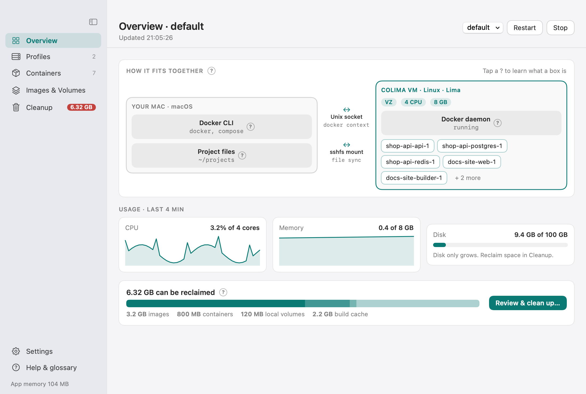

Install CDesk
Three ways to install, and one prompt that lets an AI agent do it for you.
Prerequisites
- macOS 14 or later (Apple silicon recommended).
- Homebrew.
- Colima and the Docker CLI:
brew install colima dockerIf they are missing, CDesk shows a copyable install command for you.
Option A: one-line installer (recommended)
Downloads the latest release DMG, verifies its SHA-256, installs to /Applications and opens it.
curl -fsSL https://raw.githubusercontent.com/kalahroudi/cdesk/main/scripts/install.sh | bashOptional environment variables:
| Variable | Effect |
|---|---|
CDESK_VERSION=v0.1.0 | Pin a specific version. |
CDESK_DEST=$HOME/Applications | Install into a different folder. |
If there is no release yet, the script falls back to building from source.
CDESK_VERSION=v0.1.0 CDESK_DEST=$HOME/Applications curl -fsSL https://raw.githubusercontent.com/kalahroudi/cdesk/main/scripts/install.sh | bashOption B: manual download
- Download
CDesk-<version>.dmgfrom Releases. - Open it and drag CDesk to Applications.
- Open CDesk.
The app is ad-hoc signed unless the maintainer adds a Developer ID. If macOS says it cannot verify the app, right-click it and choose Open once, or run:
xattr -dr com.apple.quarantine /Applications/CDesk.appThe curl installer does not trigger this prompt.
Option C: build from source
Needs the Xcode command line tools and Swift 6.
git clone https://github.com/kalahroudi/cdesk && cd cdesk && scripts/bundle.sh && cp -R dist/CDesk.app /ApplicationsFirst run
- The cube icon appears in the menu bar and in the Dock.
- Click it. The popover opens, and the Dock icon opens the full Manager window.
- If no Colima profile exists, CDesk offers to create one with recommended settings for your Mac.
Launch at login is on by default. Turn it off in Settings.

Let an agent install it
If you use an AI coding agent, paste the prompt below. It installs the prerequisites, runs the installer, registers the MCP server and starts a sensible profile. See Agents for details.
Agent prompt
Paste this into an AI coding agent such as Claude Code and it will do the setup for you. It will not delete anything without asking.
Install CDesk on this Mac. 1) Check that Homebrew is installed; if colima or docker are missing run `brew install colima docker`. 2) Run `curl -fsSL https://raw.githubusercontent.com/kalahroudi/cdesk/main/scripts/install.sh | bash`. 3) Register its MCP server: `claude mcp add cdesk -- /Applications/CDesk.app/Contents/MacOS/cdesk-mcp`. 4) Call colima_profiles; if there are none, call colima_recommend and start a profile with the recommended cpus/memory_gib/disk_gib via colima_start. 5) Tell me what is running. Never call colima_recreate, docker_remove_volume or docker_prune without asking me first.Updating
In the app: Settings, then Updates. CDesk checks GitHub for the latest release first. A release is a prebuilt DMG that is downloaded, SHA-256 checked against the release’s SHA256SUMS, mounted, and code-signature verified. The new app must pass a --self-test, and is then swapped in after the app quits by a small script. If the new version does not report in within about 40 seconds, the previous app is restored automatically.
If there is no newer release, CDesk compares the running commit with the head of the main branch and can build the newest commit from source (needs the Xcode command line tools). The check runs automatically once a day and can be turned off. An update log is kept.
From the terminal: run the installer command again.
Uninstall
Quit CDesk, then delete the app. The optional commands remove its settings. Your Colima VM is never touched.
rm -rf /Applications/CDesk.app
defaults delete com.kalahroudi.cdesk
rm -rf ~/Library/Application\ Support/CDeskTroubleshooting
macOS says it cannot verify CDesk
Right-click CDesk, choose Open once, or run xattr -dr com.apple.quarantine /Applications/CDesk.app.
colima or docker not found
Run brew install colima docker. CDesk also shows this command, ready to copy, when it cannot find them.
The VM is stuck on start
Open the Repair menu on the profile page and choose Force stop & restart. It runs colima stop --force and, if the VM sticks on start, also lowers memory by 1 to 2 GB.
Docker commands cannot find the Colima socket
Use Repair, then Re-register the Docker context. It runs docker context use colima.
Containers cannot reach the internet
DNS often breaks after a Wi-Fi or VPN switch. Use Repair, then Use fixed DNS & restart, which sets 1.1.1.1 and 8.8.8.8.